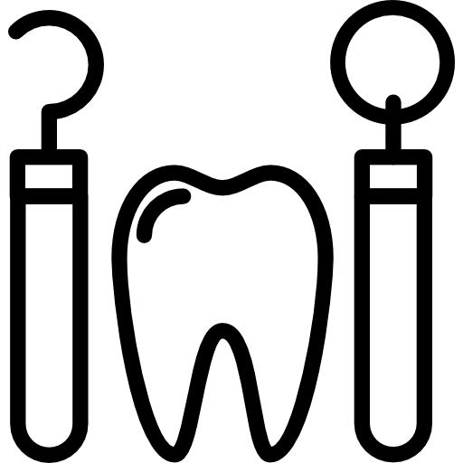

clínica odontologia especializada
O sorriso é a expressão pura da felicidade, venha sorrir com orgulho!
Nossa clínica
A Clinica Oral FK conta com profissionais comprometidos e apaixonados pelo que fazem. Somos um grupo de dentistas com alto grau de formação acadêmica e profissional. Para manter esta qualidade somos comprometidos com a educação contínua. Participamos de vários eventos de formação complementar para permanecer informados sobre o que há de mais moderno na Odontologia.
Nossas instalações trabalham com tudo que há de mais moderno e tecnologicamente desenvolvido para facilitar o tratamento da sua saúde bucal. Cuidados preventivos e educação do paciente são a chave para uma ótima saúde bucal. Oferecemos os cuidados e todas as orientações necessárias.
Conheça nossas especialidades
Clareamento Dental
É a técnica que utiliza agentes clareadores para recuperar a cor original dos dentes, perdida em algum momento durante a vida.
Implantes Dentários
São estruturas de metal posicionadas no osso maxilar abaixo da gengiva para substituir as raízes dentárias.

Próteses Dentárias
São aparelhos utilizados em substituição aos dentes ausentes que podem ser fixas ou móveis.

Endodontia
Trata das lesões e doenças da polpa dos dentes(nervo) conhecida como tratamento de canal.
Periodontia
Tratamento odontológico eficaz na remoção de placa bacteriana entre os dentes e cuidados com a gengiva.
Ortodontia
Especialidade que cuida do alinhamento de dentes tortos e mordida cruzada. Contamos com Aparelhos tradicionais, estéticos e invisíveis
Faceta Dental
São lâminas extremamente finas, quase transparentes, que são coladas na superfície de cada dente para melhorar a aparência ou corrigir o formato e a posição deles.
Clínica Geral
A boa higiene bucal é essencial para manter um belo sorriso bonito e saudável. Visitar o seu dentista com frequência é importante neste processo

Horários de atendimento, agendamentos e localização da nossa unidade. Veja abaixo essas informações. Caso haja alguma dúvida entre em contato com nossas centrais de atendimento.